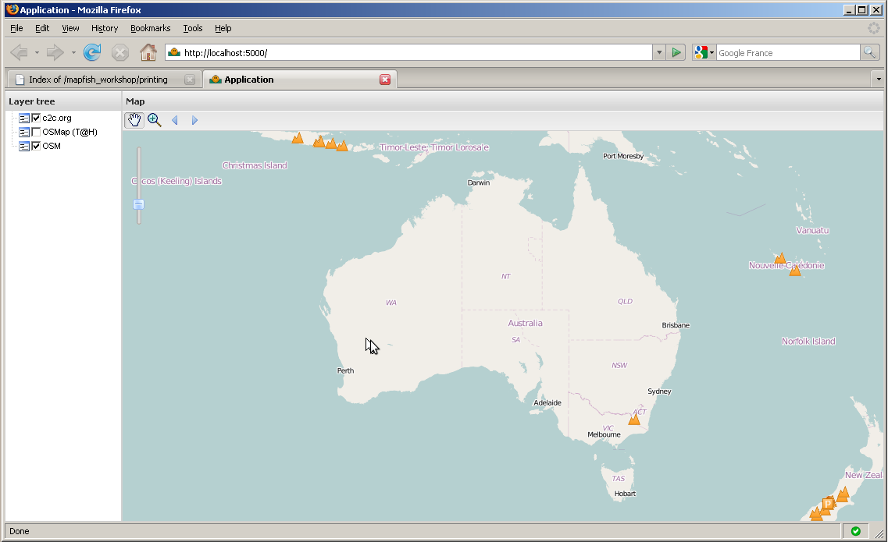
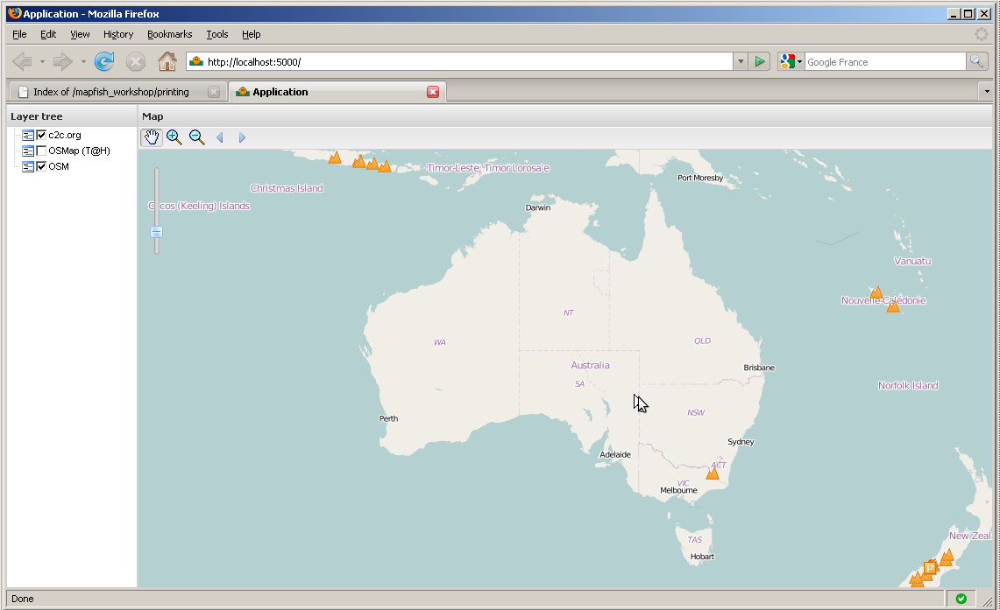

Table Of Contents
Previous topic
Module 2 - Creating Application
Next topic
Module 4 - Building JavaScript
Module 2 - Creating Application
Module 4 - Building JavaScript
In this section you’re going to customize the default user interface. More specifically you’re going to add layers and tools to the map. These tasks will involve adding JavaScript code in the layout.js file.
You’re going to add a WMS layer to the map.
Programming task
Edit the layout.js file and add a OpenLayers.Layer.WMS object to the array of layers returned by the createLayers function. Here’s the code for creating the OpenLayers.Layer.WMS object:
new OpenLayers.Layer.WMS(
"c2c.org",
"http://www.camptocamp.org/cgi-bin/mapserv_c2corg",
{
layers: 'summits,routes,huts,parkings,sites',
format: 'png',
transparent: true
}, {
singleTile: true
}
)
The OpenLayers.Layer.WMS object is given a name, a URL to the WMS, WMS parameters, and options. The singleTile option indicates that the layer is to be displayed with a single image as opposed to a grid of image tiles. See the OpenLayers.Layer.WMS doc [1] to know more about the OpenLayers.Layers.WMS class.
Note
The WMS service used here is provided by the camptocamp.org [2] non-profit organization.
After reloading the application in the browser you should get this:
Please contribute to http://www.camptocamp.org if you want to see more summits, routes, huts, parkings and climbing sites added to your map of Espagna :-)
The code you added here makes use of the OpenLayers library only, you haven’t written any GeoExt and MapFish code at this point.
Here you’re going to add a Zoom - tool next to the Zoom + tool in the map’s toolbar.
Programming task
Edit the layout.js file again, look up the createTbarItems function, and add a new GeoExt.Action object to the actions array returned by the function. Here’s the code for creating the GeoExt.Action object:
actions.push(new GeoExt.Action({
iconCls: "zoomout",
map: map,
toggleGroup: "tools",
allowDepress: false,
tooltip: "Zoom out",
control: new OpenLayers.Control.ZoomBox({
out: true
})
}));
This code creates a GeoExt.Action object configured with an OpenLayers.Control.ZoomBox instance. This code looks like that for the Zoom - tool, the main difference being the out control option set to false for Zoom + and to true for Zoom -. See the GeoExt.Action doc [3] and the OpenLayers.Control.ZoomBox doc [4] (no, actually don’t look at the later, it’s rather empty!).
We also need some CSS in mapfishapp/public/app/css/main.css:
.zoomout {
background-image:url(../img/icon_zoomout.png) !important;
height:20px !important;
width:20px !important;
}
After reloading the application in the browser you should get this:
In this section you have learned how to use GeoExt.Action objects together with OpenLayers.Control objects to add map tools in a tool bar.
Bonus task
Add zoom to max extent and draw polygons tools to the toolbar. Adding a draw polygons tool would require adding an OpenLayers.Layer.Vector to the list of layers returned by the createLayers function. Taking a look at the GeoExt toolbar.html example [5] may help.
| [1] | http://dev.openlayers.org/apidocs/files/OpenLayers/Layer/WMS-js.html |
| [2] | http://www.camptocamp.org |
| [3] | http://www.geoext.org/lib/GeoExt/widgets/Action.html |
| [4] | http://dev.openlayers.org/apidocs/files/OpenLayers/Control/ZoomBox-js.html |
| [5] | http://dev.geoext.org/trunk/geoext/examples/toolbar.html |